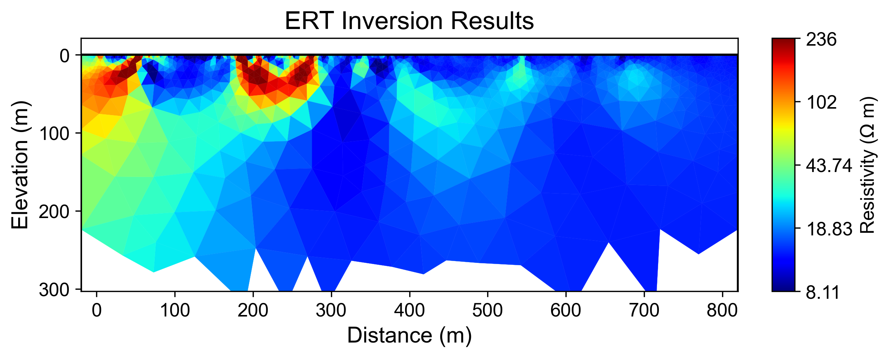
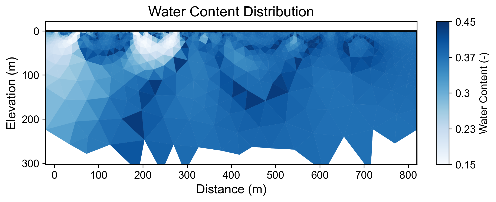
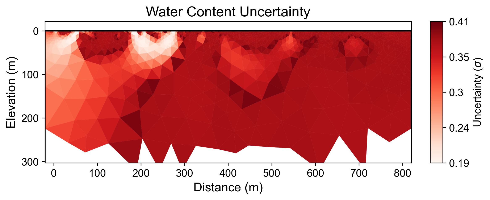

Generated by PyHydroGeophysX Multi-Agent System
Workflow Execution Date: 2026-02-23 22:08:10
Original User Request: Run ERT inversion with Instrument - ABEM Terameter LS Data file:E4_Jyoti.dat Convert to water content
Workflow Configuration: - Data File: C:\Users\hchen117\AppData\Local\Temp\phgx_uploads_is2ei56e\E4_Jyoti.dat - Instrument: ABEM-Lund - Seismic Integration: No
Key Results: - Loaded 80 electrodes with 928 measurements - Inversion converged in 7 iterations (chi2: 11.031) - Mean water content: 0.349
The primary objective of this workflow was to perform an Electrical Resistivity Tomography (ERT) inversion using data collected from an ABEM Terameter LS instrument. The data file, designated as E4_Jyoti.dat, contained measurements from 80 electrodes, yielding a total of 928 readings. The focus of the analysis was to convert the resistivity data into water content estimates, which are critical for understanding subsurface hydrological conditions. However, it is important to note that the integration of climate data, which could provide important context for the resistivity variations, was not included in this workflow.
While the current workflow did not incorporate climate data, understanding the relationship between climate conditions and geophysical results is crucial for interpreting resistivity changes. Climate factors such as precipitation patterns, potential evapotranspiration (PET), and temperature fluctuations can significantly influence subsurface water content and, consequently, resistivity values. For instance, periods of heavy rainfall typically lead to increased soil moisture levels, resulting in lower resistivity measurements. Conversely, extended drying periods may lead to reduced water content and higher resistivity. These dynamics are essential in providing a comprehensive analysis of the subsurface environment.
The ERT inversion yielded a mean water content of 0.349, with a range from 0.075 to 0.432. However, the inversion process experienced convergence issues, with a final chi-squared value of 11.031, indicating that the model may not have adequately fit the observed data. The uncertainty analysis revealed a mean uncertainty of 0.348, with a maximum reaching 0.400, suggesting that the water content estimates should be interpreted with caution. Without the integration of climate data, it is challenging to correlate these water content estimates with specific hydrological conditions or to identify anomalies that may arise from unusual climatic events.
To enhance the robustness of the findings, it is recommended that future analyses incorporate relevant climate data, particularly focusing on precipitation and temperature trends during the data collection period. This integration could facilitate a more detailed understanding of the resistivity changes observed in the ERT results. Additionally, addressing the convergence issues in the inversion process is essential, as improving model fit will yield more reliable water content estimations. Future workflows should also consider the application of site-specific petrophysical parameters instead of default values to refine the interpretation of subsurface conditions. Overall, a multi-disciplinary approach that combines hydrological, geophysical, and climatic data will provide a more holistic understanding of the subsurface environment and its response to changing climate conditions.
Insights: N/A
No climate data was integrated in this workflow.
Climate data not available for cross-modal analysis.
Interpretation: N/A
Note: No explicit petrophysical parameters were provided. Default Archie parameters were used based on geological layer type.
Parameters used per layer (means +/- std): - Regolith: m=1.500 ± 1.500, n=2.000 ± 2.000, φ=0.400 ± 0.400, ρ_sat=N/A Ωm
Interpretation: N/A



Report generated on 2026-02-23 22:08:23